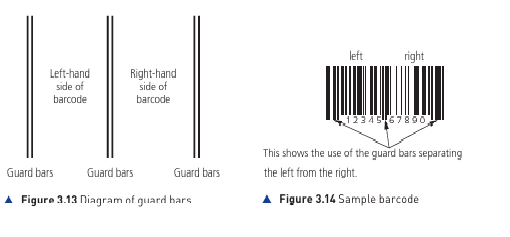
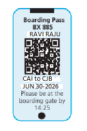
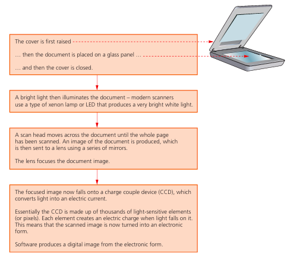

Barcode Scanners (2D and 3D)
When a barcode is scanned, a red laser or LED light is reflected back. The dark bars absorb light, while white spaces reflect it. A photoelectric cell detects the light intensity and converts it into binary data.

QR Codes (Quick Response)
Unlike 1D barcodes, QR codes are 2D and can hold significantly more data (up to 7,000 digits). They are read by cameras/imaging devices using three large squares in the corners for alignment.

Optical Character & Mark Recognition

- OCR: Converts scanned text into editable digital files.
- OMR: Detects marks on a specific position on a paper (e.g., multiple-choice exams).